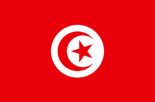
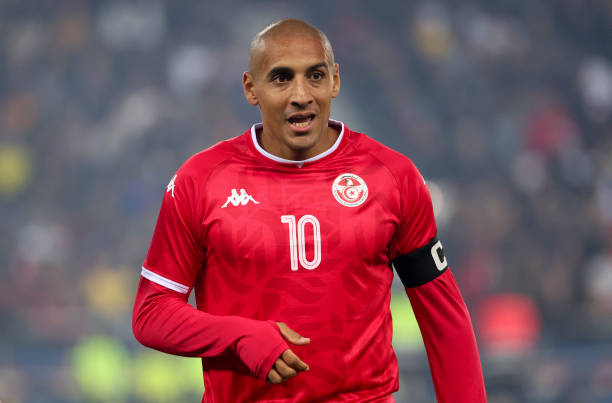
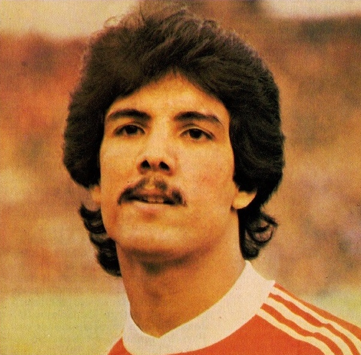
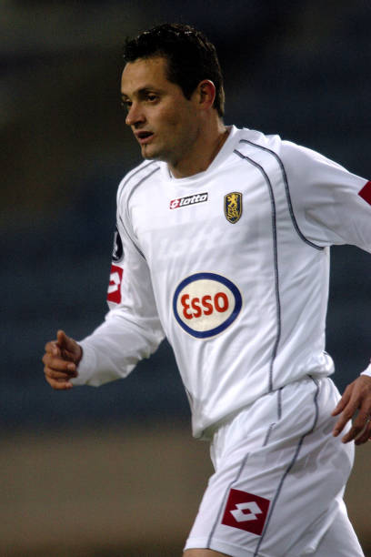
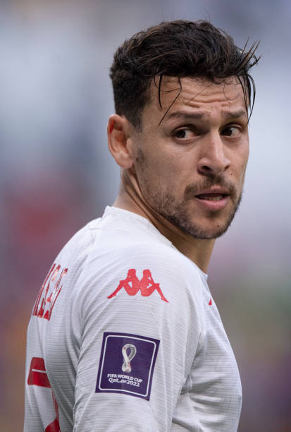

TÚNEZ
Uno de los combinados africanos más tácticos y experimentados quiere dar la sorpresa del siglo y superar la fase de grupos por primera vez.





Primera selección africana en ganar un partido en un Mundial (3-1 vs México).
En Qatar 2022 derrotaron notablemente a Francia (campeona de 2018) por 1-0.
Un equipo caracterizado por orden defensivo estricto.
CAF (África)
Les Aigles de Carthage (Las Águilas de Cartago)
Hacer historia clasificando por primera vez a los Octavos de Final.